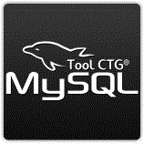

Seja bem-vindo ao MySql Tool CTG
Neste tutorial iremos lhe ensinar as funcionalidades do programa
Na tela inicial serão mostradas três abas: "Principal","Comandos","Tabela".
O programa iniciará na aba "Principal".
Nesta aba serão disponibilizadas duas áreas:
"Conexões","Tabelas".
Clicando com o botão direito do mouse na área das conexões, serão listadas opções de uso daquela area.
"Nova Conexão":
Esta opção lhe fornecerá uma tela onde você poderá digitar as informações para
criação de uma nova conexão.
"Excluir Conexão":
Clicando nesta opção, será excluída a conexão selecionada.
"Atualizar Conexões":
Selecionando esta opção, serão atualizadas todas as conexões.
"Novo Banco de Dados":
Esta opção lhe fornecerá uma tela onde você poderá digitar as informações para
criação de um novo Banco de Dados.
"Excluir Banco de Dados":
Clicando nesta opção, será excluído o Banco de Dados selecionado.
"Atualizar Banco de Dados":
Selecionando esta opção, serão atualizados todos os Bancos de Dados.
Um clique com o botão direito do mouse na área de tabelas lhe mostrará as seguintes opções :
"Nova Tabela":
Esta opção lhe fornecerá uma tela onde você poderá digitar as informações para
criação de uma nova tabela.
"Excluir Tabela":
Clicando nesta opção, será excluída a tabela selecionada.
"Atualizar Tabelas":
Selecionando esta opção, serão atualizadas todas as tabelas.
Clique aqui para prosseguir